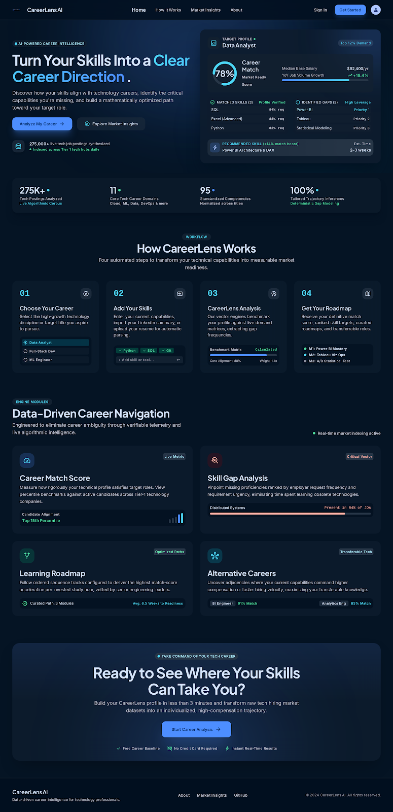

An AI-Powered Career Intelligence & Skill Gap Analysis Platform
🟡 Status: In Progress
CareerLens AI is an intelligent career guidance platform designed to bridge the
gap between academic education and industry requirements.Many university students and
fresh graduates struggle to understand which skills are currently demanded by employers
and what learning path they should follow to become competitive candidates.
This project analyzes real-world technology job market
data to identify emerging career opportunities,
required skills, and industry expectations. By combining data analytics, natural language
processing, and AI-powered recommendation techniques, CareerLens AI provides personalized
insights to help users understand their career readiness and make informed learning decisions.
The platform is designed for university students, fresh graduates, and entry-level
IT professionals who want to align their skills with current industry demands.
CareerLens AI aims to transform career planning from a guessing process into a data-driven decision-making experience by connecting learners with the skills and career paths demanded by the technology industry.
After defining the CareerLens user journey and building the initial career intelligence foundation, I translated the planned workflow into a high-fidelity web prototype.
The prototype demonstrates how users will select a target career, build their skill profile, complete career analysis, and explore personalized career insights.

Introduces the CareerLens AI platform and communicates its core purpose: helping users understand career alignment, skill gaps, learning priorities, and alternative technology career paths.
Choose the technology role the user wants CareerLens to evaluate.
Add current skills manually or review skills identified from a resume.
Compare the standardized user profile against career-specific requirements.
Present career alignment, skill gaps, learning priorities, and related career paths.
Resume-extracted skills are reviewed and editable before they are used for career analysis.
The interface explains how the user's profile moves through standardization, comparison, skill-gap analysis, and recommendation stages.
Users are evaluated against their selected technology career rather than a generic technology skill profile.
Results are designed to move beyond insight by guiding users toward skill priorities, learning pathways, and alternative careers.
This high-fidelity prototype represents the planned CareerLens AI user experience and will guide development of the working web application.
Career-specific scoring, skill-gap ranking, learning-roadmap generation, resume-based skill extraction, and alternative-career recommendation logic are currently under development. Values shown within the prototype screens are illustrative.
The project is currently under development. The initial phase focuses on building a technology career intelligence dataset by analyzing over 1.6 million job postings and classifying technology-related career domains to support future skill analysis and recommendation features.